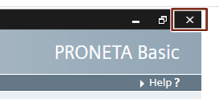

PRONETA Professional is a commercial, licensed software product distributed by SIEMENS. It contains the functionality of PRONETA Basic and furthermore provides additional functions.
Obtaining PRONETA Basic
PRONETA Basic is available as a free download from the SIEMENS support portal:
https://support.industry.siemens.com/cs/ww/en/view/67460624
This manual refers to version 3.0.
System Requirements
Connection with PROFINET is established via an Industrial Ethernet cable.
The following additional software components need to be present as well:
WinPcap 4.1.3 or higher
If .NET is missing on your PC, the installer will guide you to a download location. WinPcap is part of the PRONETA Basic distribution and will be installed at the first start of PRONETA Basic, if not found.
|
NOTE |
|
Supported SIMATIC Software
PRONETA Basic allows the loading of reference projects created with STEP 7, Versions 5.4, 5.5, or 5.6. It is also possible to import AML ("Automation Markup Language") files created with TIA Portal.
Limitations
The maximum size of a network for which network scans will be reliably performed is 500 devices. For larger networks, devices may go undetected, or PRONETA Basic may crash. (See also Online Mode)
In the IO Test, signal changes of less than 256 ms duration may not be reliably observed. (See also IO Test Task)
PRONETA Basic supports all PROFINET-conform devices irrespective of their manufacturer. The supported range of functions depends on the individual device.
The IO Test supports the following modules:
Most current SIMATIC ET 200 modules
SIMATIC IO-Link modules (Master/Device)
SIMATIC Compact Field Units (CFU)
SIRIUS Motor Starters with Firmware Versions 1.1 or greater
SIPLUS Heating Control Systems HCS4200/4300
Reference List
A continuously updated list of supported modules for PRONETA Basic can be found on the PRONETA download page
Updating the PRONETA Basic GSDML database
Modules that appear after the release of version 2.6 can subsequently be supported by importing their GSDML file from the SIEMENS Industry Online Portal web pages, provided they do not require any new functionality. The chapter GSDML Manager provides more details on this.
Installation
Extract the PRONETA Basic file archive into a folder on your PC, and connect your PC by means of an Industrial Ethernet cable with your plant.
No further installation is required for PRONETA Basic.
|
NOTE |
The extraction path for PRONETA Basic must not contain either of the special characters “#” or “;”. To perform IO Tests (see IO Test Task, 3.3), PRONETA Basic must be placed in a directory where it will have writing privileges during execution. |
Starting PRONETA Basic
After installation, you can start PRONETA Basic by a simple double-click on the program icon in the extraction folder.
|
NOTE |
When running PRONETA Basic for the first time, you will be asked to acknowledge the license conditions before you can proceed. |
You may also create a shortcut link to PRONETA Basic on your desktop and start the program from there.
Finishing PRONETA Basic
To quit PRONETA Basic, click on the “Close”-icon of the program’s window.

Deinstallation
If you do not plan to use PRONETA Basic any further, perform the two following steps:
1. Delete the folder to which you extracted PRONETA Basic,
2. In the Windows start menu, execute “WinPcap -> Uninstall WinPcap 4.1.3”